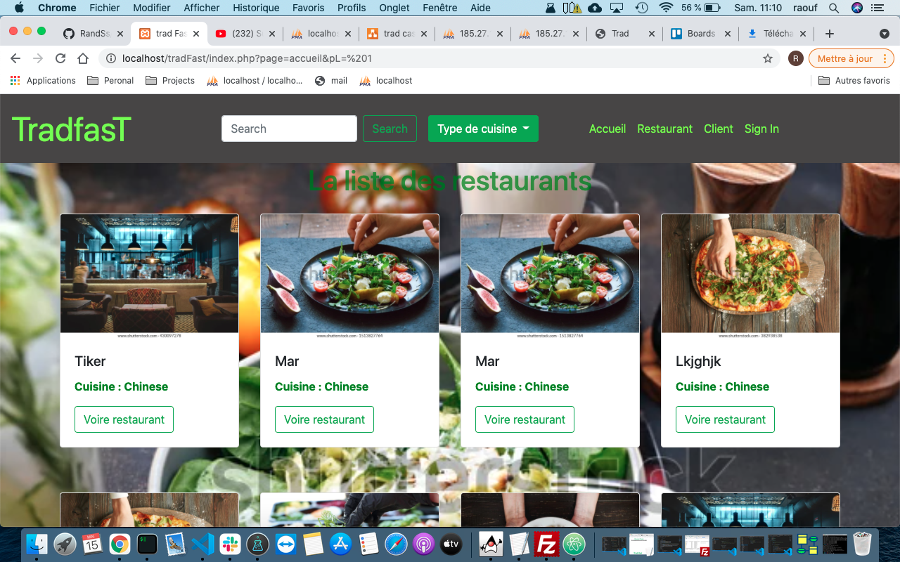
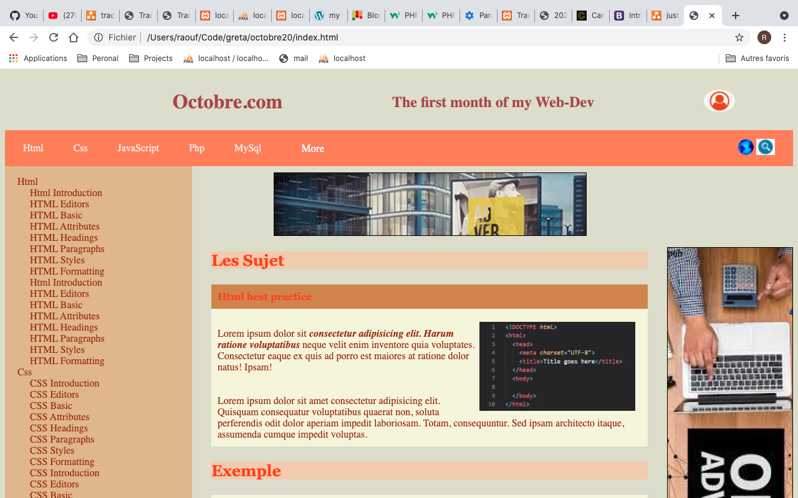
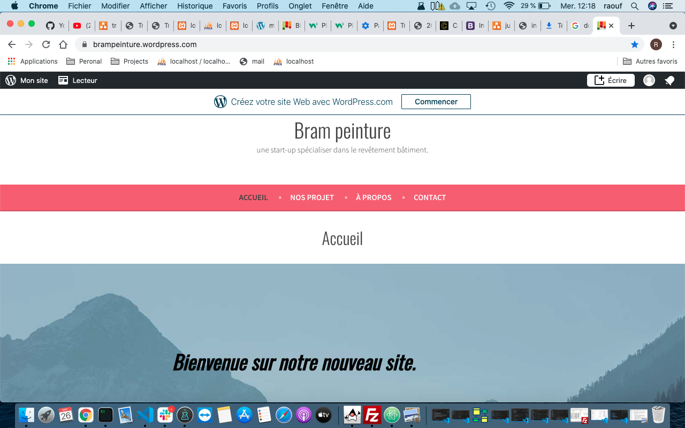

Concepteur D'éveloppeur d'application
Conception d'application & développeur web et web mobile
Je suis un Développeur Full-Stuck
Front-end
| HTML | CSS | JAVASCRIPT | JQUERY | BOOTSTRAP | |||
|---|---|---|---|---|---|---|---|
Back-end
| PHP | SYMFONY | SQL | JAVA | J2EE |
|---|
Analyse & Conception
| UML | MERISE |
|---|
Mon Portfolio
Tradfast
Tradfast c'est une plateforme de commande de restauration.
Html, Css, Bootstrap, Javascript, Jquery, Php, Sql, MySql
October
October c'est le premier projet après avoirs passer un mois de formation de développeur web et web mobile.
Html, Css, Javascript
Bram Peinture
Bram Peinure c'est un site vitrine monté avec du wordpress.
wordpress
Formation
Titre Professionnel Développeur Web/Web Mobile (bac+2)
Greta MTE 93 Noisy-Le-Grand
- Conception d’un site web ou d’une application
- Créer les maquettes d'une application ou d'un site
- Concevoir une base de données
- Créer et manipuler une base de données
- Développer les fonctionnalités d'un site
- Développer un site responsive
- Test & mise en production
2021/2022
2020/2021
Concepteur Développeur d'Application (bac+4)
Afpa Paris 12
- Architecture SOA
- Java SE POO et MVC
- Java EE
- Bases de données SQL et NoSQL
- DevOps : Docker - Jenkins/Jira...
- Gestion de projet